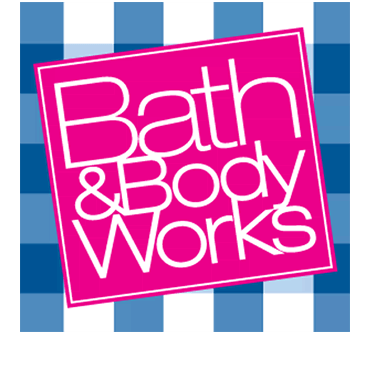
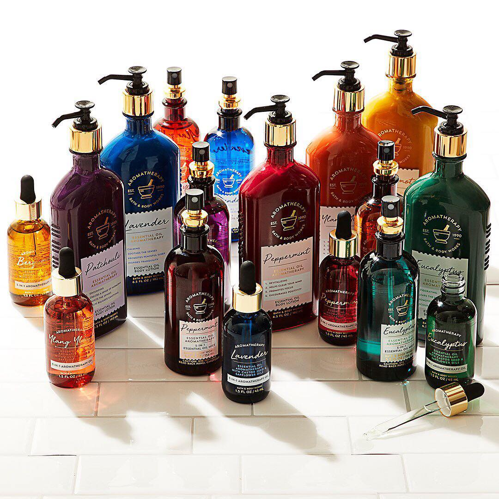

Bath & Body Works, LLC. is an American retailer under the L Brands (formerly Limited Brands) umbrella,
along with Victoria's Secret.
It was founded in 1990 in New Albany, Ohio and has since expanded across the United States, Canada,
Chile and Peru.
In 1997, it was the largest bath shop chain in the United States.
It specializes in shower gels, lotions, fragrance mists, perfumes, candles, and home fragrances.
Works was founded in 1990 in New Albany, Ohio.
The company's first store opened in a Cambridge, Massachusetts mall in September 1990.
In 1997, a secondary brand called Bath & Body Works at Home was launched.
The division has since been renamed White Barn Candle Company.
A Bath & Body Works in Rapid City, South Dakota
Bath & Body Works launched both a seasonal catalog and a website in 2006.
In November 2006, the company launched its first television commercial advertisement.
Net sales as of January 28, 2006 were $2.3 billion, significantly higher than all other L Brands
companies other than Victoria's Secret.
In July 2008, the company announced that it was opening six locations in Canada.
With the company acquiring Canadian-based La Senza, they felt it was the opportunity to move into a
growing Canadian market, with The Body Shop being its main competition.
Bath & Body Works operates more than 1,600 stores.
In October 2010, it opened its first stores outside of North America in Kuwait, by the franchise giant
M.H. Alshaya.
Products
Bath and Body Works stocks a wide range of bath and beauty products in the United States. The retail
store has products ranging from candles to hand soaps.
The products are a part of one of the brand's main segments, body care, hand soaps and hand sanitizers
and home fragrance.
Body Care

The body care segment has multiple collections within it.
These collections include Signature collection, Retired fragrances,C.O.
Bigelow, Aromatherapy and Travel Body Care.
The Signature collection includes shower gels, body lotions, body creams, fragrance mists and body
scrubs, with items that are tailored to both men and women.
This collection includes the fragrance sugar plum dream and vanilla bean, which are Bath and Body Works'
best seller.
It also includes a fragrance titled A Thousand Wishes, which won a consumer's choice award in 2015.
C.O. Bigelow has products for both men and women.
Majority of these products also provide a luxury feel.
Products include, shave foam and cream, mentha body (body buffer, body wash, body lotion, bar soap and
lip care), C.O. Bigelow lemon and C.O. Bigelow Barber.
The Aromatherapy collection has body care items such as body lotions, shower gels, massage oils and body
mists.
The fragrances included in this collection are used to enhance psychological well-being.
This collection has aromatherapy fragrances for stress which include, eucalyptus spearmint, eucalyptus
tea.
The sleep fragrance is lavender cedarwood. The energy fragrances are orange ginger and happiness.
The Travel Body Care items are 3-ounce bottles of body lotion, shower gel, fine fragrance mists and body
creams.
Aromatherapy collection also have limited products in the Travel Body Care collection.
Bath and Body Works is your go-to place for gifts & goodies that surprise & delight.
From fresh fragrances to soothing skin care, we make finding your perfect something special a
happy-memory-making experience.
Searching for new seasonal creations or your favorite discontinued scents?
We've got you covered there, too. Oh! And while you're browsing, shop our latest & greatest selection of
lotions, soaps and candles!
Bath & Body Works, the world renowned fragrance brand, is now available in over 80 locations across the
Middle East, North Africa, Turkey, Russia and Poland.
With more than 1,700 stores across the globe, Bath & Body Works takes pride in providing its customers
with a world-class selection of beauty products, and has redefined the way customers wear fragrance with
The Daily Trio.
Customers can layer their favorite scent in three simple steps cleanse, moisturize and fragrance to make
it part of their everyday personal care routine.
In addition to sumptuous body care, Bath & Body Works offers visitors the most luxurious Hand Soaps,
Sanitizers, and Home Fragrance products, including the World's Best Candles!
Pampering collections such as True Blue Spa and Aromatherapy simply add to the charm, making it the
perfect one-stop shop for personal fragrance.